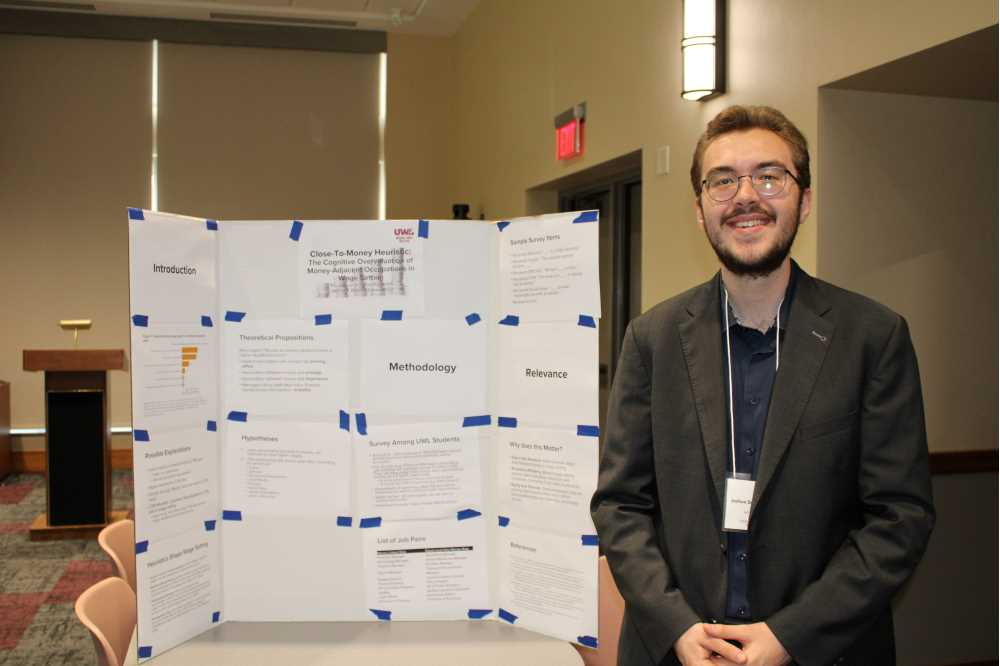

Bio
My name is Joshua T. S. Rosendorn (aka Joshua Schulze-Reimpell), and I’m a graduate student at The Ohio State University (OSU), pursuing a PhD in Decision Psychology under the supervision of Dr. Ido Erev. I completed my undergraduate studies at the University of Wisconsin-La Crosse (UWL) in 2026, where I double-majored in Psychology and Philosophy with a minor in Neuroscience. I earned my Abitur (secondary school degree) from the Reuchlin-Gymnasium Ingolstadt in Germany in 2022.
Together with Dr. Ido Erev, I am conducting research on the description-experience gap. I gained my earliest research experiences at UWL, where I worked on research projects in cognitive and decision-making psychology, behavioral economics, philosophy of mind, and metaethics. I am continuing to work on many of the projects I began at UWL.
I received numerous awards and distinctions while at UWL. The College of Arts, Social Sciences, and Humanities awarded me Recognitions of Excellence in both Psychology and Philosophy in 2026. The Psychology Department additionally granted me the Outstanding Psychology Student Award (OPSA) in 2026, which is given each year to the department's best graduating senior. At the 2026 Humanomics Symposium hosted by the Menard Family Center for Economic Inquiry at Creighton University, I won first place in the Undergraduate Research Pitch Competition. I was also admitted to the Honors programs of both the Psychology and Philosophy departments and received the Undergraduate Research & Creativity (URC) Grant in spring 2025. Finally, I served as a Menard Family Initiative (MFI) Research Fellow (link) in the 2025–2026 academic year.
Outside the lab, I listen obsessively to classical music and regularly attend concerts, enjoy reading works of fiction, love to cook, and often watch local theatre productions. I have previously held positions in numerous student and community organizations in La Crosse and Ingolstadt. I look forward to getting involved in Columbus, OH, soon.
Photos
